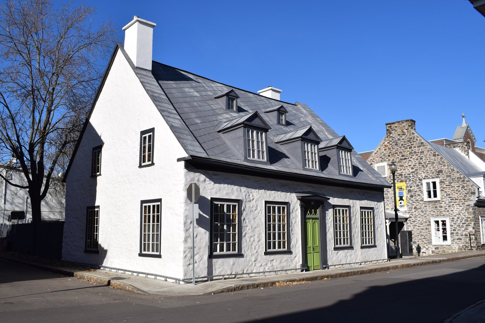

French-regime house in stone (colonial français) La maison d'esprit français (courant colonial français)

Maison Georges-De Gannes, 834 rue des Ursulines, in the site patrimonial de Trois-Rivières (October 2020) — built about 1756, classed as an immeuble patrimonial in 1961. © Cantons-de-l'Est, Wikimedia Commons, CC BY-SA 4.0 — https://commons.wikimedia.org/wiki/File:Trois-Rivieres,_Quebec_-_834_rue_des_Ursulines.jpg
The house the first colonists built and the notables rebuilt in stone: a squat rectangle sitting straight on the ground without a cellar, one floor under a steep roof that could reach 55 degrees, few windows because the winter demanded few, and massive chimneys because it demanded many. In town the party walls run up past the roof as fire-breaks. Trois-Rivières had almost no local stone, so the stone version was always the exception — the mark of a family with the means to ship it from the south shore.
Brought from rural north-western France — Brittany, Normandy, the Île-de-France — and adapted fast to a country with different materials and a harsher winter. The RPCQ says of the declared site that "le Régime français a légué… la maison Saint-François… des résidences de notables en pierre, comme le manoir de Tonnancour (1795-1797)". The form outlived the Conquest by the isolation of the population, and buildings put up between 1780 and 1820 still show it; from the 1820s, crossed with English neoclassicism, it produced the maison de tradition québécoise. The 1908 fire destroyed several of the city's French-regime buildings, including the parish church and the maison des Gouverneurs.
| Tenure / plan | single-family |
|---|---|
| Storeys | 1–1.5 |
| Roof form | gabled-or-hipped |
| Roof pitch | 55° |
| Window proportion | vertical |
| Principal cladding | stone, wood-piece-sur-piece, stucco |
| Roofing | cedar shingle; traditional tin in town |
| Garage | none |
| Lot width | – |
| Front setback | – |
| Side setback | – |
| Front yard green | – |
What Ville de Trois-Rivières says about this type
- Les premières constructions érigées au moment de la fondation de Trois-Rivières sont des constructions modestes élevées à la hâte en pleine nature sauvage. Originaires des milieux ruraux de France, les colons ainsi que les gens de métier – charpentiers, maçons, menuisiers – apportent au pays leur savoir-faire traditionnel en matière de construction.
- Cette première architecture est issue des traditions constructives de la France, tout particulièrement des régions du nord-ouest telles que la Bretagne, la Normandie et l'Île-de-France.
- La pierre est quasi absente de la région et doit être apportée de la rive sud. Ainsi, les rares habitations de pierre sur le territoire trifluvien appartenaient à des familles bien nanties ou d'une certaine notoriété. La pierre est souvent réservée aux bâtiments plus imposants tels les moulins, les couvents et les églises.
- Comme en témoignent certains bâtiments construits entre 1780 et 1820, ce courant perdure au-delà de la Conquête anglaise en raison de l'isolement de la population de la Nouvelle-France. Continuant à évoluer et subissant l'influence de l'architecture anglaise, la maison coloniale française engendre, à partir des années 1820, la maison dite de tradition québécoise.
- Built at ground level, without a cellar, on shallow stone footings; the house is entered from the flat.
- In town, set with the façade directly on the street, so that the party walls carried above the roof do the work a setback would otherwise do.
- Stone was almost absent from the Trois-Rivières district and had to be brought from the south shore, so the rare stone houses belonged to the well-off or the notable; stone was otherwise reserved for mills, convents and churches.
- Rectangular body close to the ground, squat in proportion.
- A single ground floor under an inhabited attic.
- Steep straight two-slope roof, pitches reaching as much as 55 degrees; some roofs hipped on four slopes.
- Short straight eaves (larmiers), or later slightly upturned ones.
- Some rural houses longer and shallower, like the manoir Boucher-De Niverville; others squarer and more massive.
- Corps de logis rectangulaire situé près du sol, fondations peu profondes en pierre
- Les maisons coloniales françaises sont généralement construites à ras de terre, sans cave, ne comportant qu'un rez-de-chaussée auquel on accède de plain-pied.
- Toit à deux versants droits ou à croupes, traditionnellement recouvert de bardeau de cèdre. En milieu urbain, le bardeau de bois fait souvent place à de la tôle traditionnelle
- Le corps de logis est surmonté de combles sous des toits à pignons hauts et aigus dont les pentes peuvent atteindre 55 degrés. Certains toits sont à croupes (quatre versants) et d'autres disposent de larmiers courts et droits ou, plus tard, légèrement retroussés.
- Few ornaments beyond the chambranles framing the openings; simplicity and bareness are the point.
- Massive stone chimney stacks, sometimes set "en chicane" — not all on the same roof slope.
- Fire-break party walls carried above the roof in urban settings.
- Where a house was later brought up to date, the neoclassical additions read as additions — at the maison Georges-De Gannes a pedimented entrance portal, a cornice, cornice returns and carved window surrounds.
- Cheminées massives en pierre, parfois disposées en chicane (pas toutes sur le même versant de toit), présence de murs coupe-feu en milieu urbain
- Peu d'ornements, mis à part les chambranles autour des ouvertures
- Asymmetrical façade composition; openings distributed by need rather than by rule.
- Openings few in number, to limit heat loss, and doubled by storm doors and storm windows.
- Double casement windows with small panes, working shutters.
- Few or no dormers, and where present, gabled and small; dormers appear only at the end of the French regime, as a new way of inhabiting the attic.
- Composition de façade asymétrique
- Ouvertures peu nombreuses, fenêtres à double battant à petits carreaux, volets fonctionnels, peu ou pas de lucarnes (à pignon)
- Squat carré of rubble stone or of massive squared timber, sometimes rendered in roughcast or covered with vertical boards; a slight batter in the walls.
- Roof traditionally of cedar shingle; in town the wooden shingle often gives way to traditional tin.
- Carré trapu en pierre à moellons ou en bois d'œuvre massif, peut être recouvert de crépi ou de planches verticales, léger fruit dans les murs
- Répondant à des besoins spécifiques, ces demeures sont fonctionnelles. Sans décoration ni recherche stylistique, elles brillent par la simplicité de leur aspect plutôt trapu. Les ouvertures sont peu nombreuses et distribuées selon les besoins, sans symétrie, les lucarnes sont rares et petites, et les cheminées, importantes.
- Plusieurs bâtiments érigés durant le Régime français ont été soit reconstruits ou agrandis, soit mis au goût du jour durant le Régime anglais.
Encoded from the City's "Colonial français" fiche (Patri-Arch), which is city-wide, and cross-read against the two ministerial documents for the declared site. Only about a dozen buildings of this period survive anywhere in Trois-Rivières, and the surviving domestic examples inside the declared site number three. The stone version is encoded here because it is the one the RPCQ singles out — "des résidences de notables en pierre, comme le manoir de Tonnancour" — but the fiche's own point is that stone was the exception in this district and that most French-regime building here was of wood; the maison Saint-François is the wooden survivor. Dates differ between sources and are reported with their attributions in `related_buildings` rather than averaged.
- Prefer: preserve the imposing volume and the squat aspect of these houses, and the asymmetrical distribution of the openings, which should also stay few in number.
- Prefer: use traditional materials — stone and wood for the walls, wood shingle or traditional tin for the roofs, and wood for doors and windows. Avoid modern materials such as vinyl and aluminium.
- Avoid: adding ornament. Simplicity and bareness are what characterise these buildings.
- Avoid: moving, enlarging, adding or altering doors, windows and dormers.
- Avoid: uprooting old buildings from the place they were built. The City's own fiche makes the point about the 1781 windmill, moved to the university grounds in 1974: the move saved it from demolition but cost it part of its historical meaning.
- Lors de travaux de restauration ou de rénovations, il est impératif de préserver le volume imposant et l'aspect trapu de ces demeures, ainsi que la distribution asymétrique des ouvertures qui doivent d'ailleurs demeurer peu nombreuses.
- Idéalement, des matériaux traditionnels devraient être employés : pierre et bois pour les façades, bardeau de bois ou tôle traditionnelle pour les toits et ouvertures en bois. L'utilisation de matériaux modernes, tels que le vinyle et l'aluminium, est à éviter.
- Il faut finalement résister à l'idée d'ajouter des ornements, car la simplicité et le dépouillement caractérisent ces bâtiments.
- Il vaut mieux éviter de déplacer, d'agrandir, d'ajouter ou de modifier des portes, des fenêtres et des lucarnes.
- Il faut éviter de déraciner des bâtiments anciens de leur lieu d'origine.
Same word elsewhere
- Central-gable house (maison à pignon central) (Gatineau)
- Complex gabled-roof house (maison à toit complexe à pignon) (Gatineau)
- Mansard-roofed house with gable wall on the façade (maison à toit mansardé avec mur pignon en façade) (Gatineau)
- One-and-a-half-storey wooden matchstick house (maison allumette en bois d'un étage et demi) (Gatineau)
- Wood matchstick house of two to two and a half storeys (maison allumette en bois de deux à deux étages et demi) (Gatineau)
- Brick matchbox house, two to two and a half storeys (maison allumette en brique de deux à deux étages et demi) (Gatineau)
- Cubic house (maison cubique) (Gatineau)
- CIP executive's house (maison de cadre de la CIP) (Gatineau)
- Flat-roofed wood house (maison en bois à toit plat) (Gatineau)
- Flat-roofed brick house (maison en brique à toit plat) (Gatineau)
- L-plan house with a two-slope (gable) roof (maison avec plan en L à toit à deux versants) (Gatineau)
- English-revival stone house (Hampstead)
- Postwar detached house (Hampstead)
- Franco-Québécois transitional house (Lévis)
- Québécois traditional house (Lévis)
- Neoclassical house (Lévis)
- Second Empire house (Lévis)
- Victorian house (Lévis)
- American vernacular house (Lévis)
- Beaux-Arts house (Lévis)
- Boomtown house (Lévis)
- Flat-roofed house (Lévis)
- Garden City House (Town of Mount Royal)
- Faubourg House (Town of Mount Royal)
- Canadian House (Town of Mount Royal)
- New England House (Town of Mount Royal)
- Georgian House (Town of Mount Royal)
- English Manor House (Town of Mount Royal)
- Bungalow (Town of Mount Royal)
- Cottage (Town of Mount Royal)
- Split-Level (Town of Mount Royal)
- Prairie House (Town of Mount Royal)
- Semi-detached single-family house (Outremont (borough of Montréal))
- Detached single-family house (Outremont (borough of Montréal))
- Modern house on the flank (Outremont (borough of Montréal))
- Faubourg house (Le Plateau-Mont-Royal (borough of Montréal))
- Detached urban house (Le Plateau-Mont-Royal (borough of Montréal))
- Row urban house (Le Plateau-Mont-Royal (borough of Montréal))
- One-storey rural house of French inspiration (Québec City)
- Urban stone house of French inspiration (Québec City)
- Franco-Québécois transition house (Québec City)
- London-type terrace house (Québec City)
- Québécois neoclassical house (Québec City)
- Mansard-roofed house (Québec City)
- Rudimentary faubourg house (Québec City)
- Cubic house (Four Square) (Québec City)
- Flat-roofed faubourg house (Québec City)
- Neo-Queen Anne house (Québec City)
- Neo-Tudor house (Québec City)
- Arts and Crafts house (Québec City)
- Dutch Colonial Revival house (Québec City)
- Neo-Georgian house (Québec City)
- Traditional French and Québécois house (Saint-Lambert)
- Mansard-roofed house of Second Empire influence (Saint-Lambert)
- Queen Anne style house (Saint-Lambert)
- Boomtown house with false mansard (Saint-Lambert)
- Boomtown house with crown (parapet or cornice) (Saint-Lambert)
- Cubic (Four Square) house (Saint-Lambert)
- House of Arts and Crafts influence (Saint-Lambert)
- The modern house (including the bungalow) (Saint-Lambert)
- Lower-town company house (Ross and Macdonald, 1918–1923) (Témiscaming)
- Upper-district company house (Somerville, 1925–1950) (Témiscaming)
- Stone house in the French tradition (Vieux-Terrebonne)
- Maison cossue of rue Saint-Louis (Vieux-Terrebonne)
- Neoclassical Québécois stone house (Vieux-Terrebonne)
- Small-gabarit vernacular village house of the Bas-de-la-Côte (Vieux-Terrebonne)
- Well-to-do bourgeois house in stone and brick (maison cossue) (Trois-Rivières)
- Boomtown house (Trois-Rivières)
- Cubic house (Four-square) (Trois-Rivières)
- Arts & Crafts house (Trois-Rivières)
- Picturesque villa and country house (Westmount)
- Greystone row house (Westmount)
- Mansard-roofed house of Second Empire influence (Westmount)
- Queen Anne house (Westmount)
- Richardsonian Romanesque house (Westmount)
- Semi-detached brick house (Westmount)
- Eclectic prestige house of the summit (Westmount)
- Tudor Revival house (Westmount)
- Arts and Crafts semi-detached house (Westmount)
- Interwar apartment house (Westmount)
Same form elsewhere
- French-regime house (Régime français) (Lévis)
- Urban stone house of French inspiration (Québec City)
- Stone house in the French tradition (Vieux-Terrebonne)
Same period elsewhere
- French-regime house (Régime français) (Lévis)
- One-storey rural house of French inspiration (Québec City)
- Urban stone house of French inspiration (Québec City)
- Franco-Québécois transition house (Québec City)
- London-type terrace house (Québec City)
- Palladian house (residential Palladian) (Québec City)
- Traditional French and Québécois house (Saint-Lambert)
- Stone house in the French tradition (Vieux-Terrebonne)
Same style elsewhere
- French-regime house (Régime français) (Lévis)
- Franco-Québécois transitional house (Lévis)
- One-storey rural house of French inspiration (Québec City)
- Urban stone house of French inspiration (Québec City)
- Franco-Québécois transition house (Québec City)
- Traditional French and Québécois house (Saint-Lambert)
- Stone house in the French tradition (Vieux-Terrebonne)